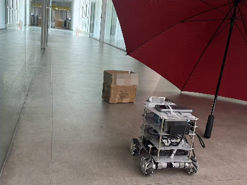
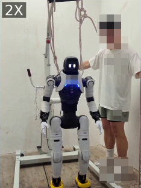
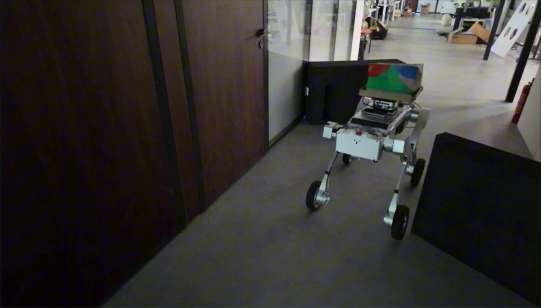

RGB HISTORY · SPATIAL REASONING · LOCAL PLANNING
EchoNav.
Evidential BEV Completion from Historical
Observations for Visual Navigation
A local map that retains what the robot has seen
and infers the obstacles and free space it has not.
01 / WHEELED ROBOTS
Wheeled Robots
Explore one recorded trial per method in each scene, with EchoNav, X-NavDP, and OmniVLA shown together.
X-NavDP
OmniVLA
02 / HUMANOID ROBOTS
Humanoid Robots
Explore EchoNav demonstrations near a glass door and while exiting an elevator.
EchoNav Ours
1× speed03 / QUADRUPED ROBOTS
Quadruped Robots
Explore an EchoNav demonstration of indoor navigation using historical observations.
EchoNav Ours
1× speed86.3%Two-goal navigation success
1,000 routes · 308 held-out scenes
73.3%Wheeled-robot success
60 matched trials · 20 real scenes
10 × 10 mLocal evidential BEV
256 × 256 cells · RGB-only predictor
04 / THE IDEA
The world is larger
than the latest view.
In cluttered rooms, the latest image reveals only part of the layout. A useful navigation map needs to recover structure seen earlier and infer what remains hidden behind furniture or walls.
EchoNav combines selective temporal fusion with evidential occupancy completion. Short RGB sequences become a local bird’s-eye-view map of occupancy, observed free space, spatial support, and confidence, ready for conventional motion planning.
Read the abstractPREDICTOR INPUTRGB images onlyNo depth or camera-pose inputs. No explicit geometric warping.
05 / METHOD
Remember. Complete. Plan.
A learned spatial representation connects visual history to an established local planner.
Retain useful history
A frozen VGGT-Omega encoder processes the RGB window. Historical residuals refine a latest-frame anchor through cellwise weights and a learned no-update option.
Complete hidden space
Observation-aware heads separate observed free space from inferred occupancy, predicting spatial support and confidence alongside the completed map.
Replan as evidence arrives
The planner accounts for robot footprint, obstacle clearance, and map reliability. It executes a short path segment, then updates the BEV from the next observation.
How does confidence inform planning?
Confidence combines spatial support, the strength of the occupied/free preference, and low mixture variance. The planner inflates supported obstacles for the robot’s footprint and safety margin, then penalizes lower-reliability traversable regions. Unsupported cells retain an unknown label.
The confidence score is a constructed measure, not a calibrated collision probability. The predictor uses a short RGB window; it does not maintain a recurrent BEV state. Method details, Sections III-B–E ↗
06 / SPATIAL REPRESENTATION
07 / PHYSICAL ROBOTS
One representation.
Different embodiments.
Quantitative evaluation on a wheeled robot, with additional demonstrations on humanoid and quadruped platforms.

Wheeled robot
Frosted-glass doorways, goals outside the room, and navigation under very low illumination.
Watch the test cases
Humanoid
Navigation near a glass door, followed by leaving an elevator and dynamically avoiding a person.
Watch the demonstrations
Quadruped
Long-horizon indoor navigation that uses historical observations to avoid revisiting unproductive routes.
Watch the demonstration08 / EVALUATION
More context.
Better navigation.
Explore navigation success and the contribution of selective temporal fusion. Values are reported in the paper.
SIMULATION · SUCCESS RATEReach both goals,
Reach both goals,
in sequence.
1,000 shared routes across 308 held-out scenes. The second destination is revealed only after the first is reached.
+32.2percentage points
over OccAnt-RGBD
over OccAnt-RGBD
Success rate (%) · higher is better0—100
The strongest evaluated baseline is shown here. Success requires reaching both destinations in order without collision. Full comparisons: Section IV-D.
BEYOND THE VISIBLE SURFACES
Occupancy prediction results.
RGB history recovers earlier observations and supports inference in regions that remain occluded across all input views.
| Method | mIoUU (%) | IoUO (%) | mIoUG (%) | CovG (%) |
|---|---|---|---|---|
| DiScene | 43.21 | 97.28 | 32.02 | 100.00 |
| SplatSSC | 40.58 | 94.97 | 31.11 | 100.00 |
| VGGT-Omega | 42.62 | 53.12 | 44.26 | 13.06 |
| OccAnt-RGB | 32.40 | 44.88 | 33.88 | 39.14 |
| OccAnt-RGBD | 63.96 | 81.57 | 55.16 | 56.32 |
| EchoNav (dense) | 57.32 | 97.54 | 48.29 | 100.00 |
| EchoNav (filtered) | 64.72 | 96.98 | 52.79 | 50.84 |
| Method | mIoUU (%) | IoUO (%) | mIoUG (%) | CovG (%) |
|---|---|---|---|---|
| DiScene | 39.74 | 80.36 | 32.68 | 64.76 |
| SplatSSC | 37.71 | 75.97 | 32.12 | 64.76 |
| VGGT-Omega | 40.61 | 55.25 | 38.22 | 11.86 |
| OccAnt-RGB | 31.10 | 47.15 | 31.27 | 22.26 |
| OccAnt-RGBD | 55.82 | 80.14 | 46.72 | 42.51 |
| EchoNav (dense) | 55.27 | 95.67 | 47.91 | 100.00 |
| EchoNav (filtered) | 68.32 | 89.58 | 61.17 | 35.03 |
Table I · Occupancy prediction results from the supplied paper. Accuracy and coverage are reported together; all values are percentages.
Accuracy and coverage, reported together.
With ten-image history, dense EchoNav predictions reach 47.91% mIoU in region G at 100% coverage. Confidence filtering raises this to 61.17% at 35.03% coverage. G contains the supported region outside observed free space; unknown predictions are excluded from its mIoU. Table I ↗
09 / RESOURCES
Explore the research.
Read the full method, evaluation protocols, ablations, and physical-robot results.
Open paper Explore robot experiments ↗BibTeX
@misc{liu2026echonavevidentialbevcompletion,
title={EchoNav: Evidential BEV Completion from Historical Observations for Visual Navigation},
author={Diwen Liu and Yiyang Shao and Borui Wang and Chi Zhang and Jizhuo Chen and Jiaming Wang and Benyun Zhao and Zhongyu Li and Yunhui Liu},
year={2026},
eprint={2610.27616},
archivePrefix={arXiv},
primaryClass={cs.RO},
url={https://arxiv.org/abs/2610.27616},
}